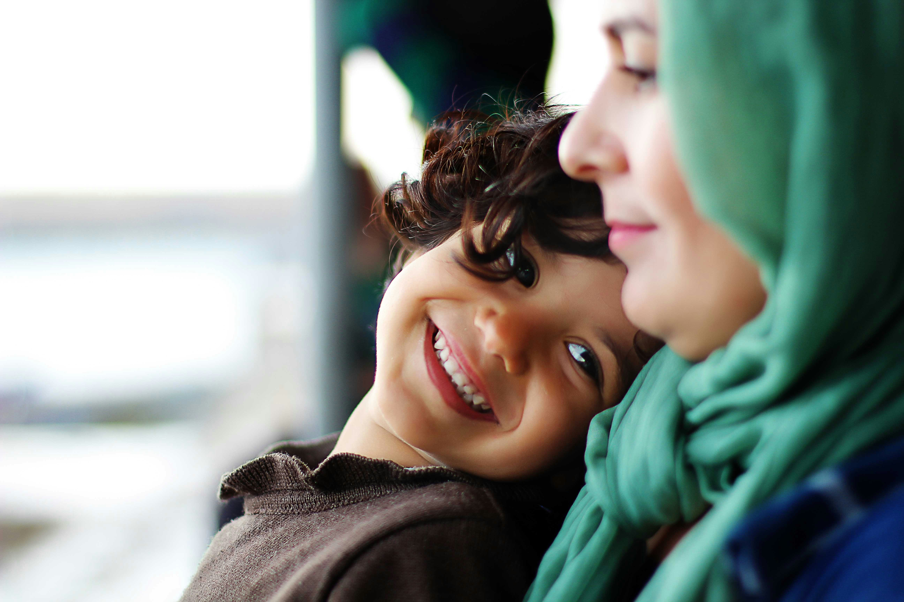
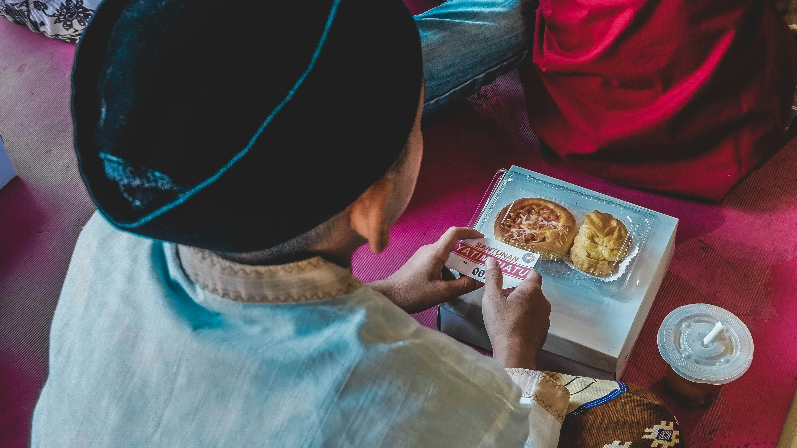
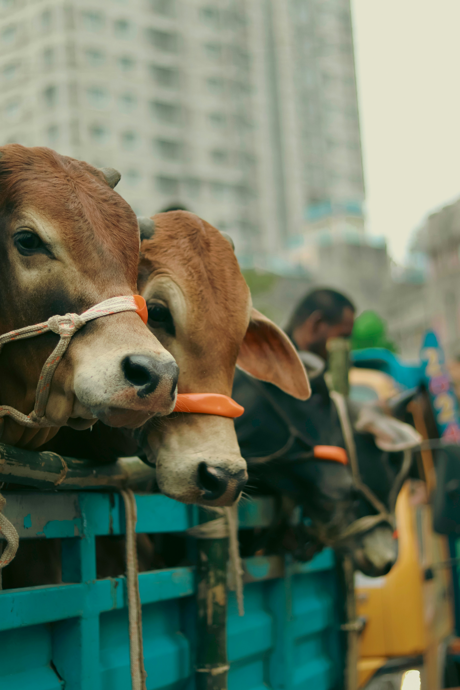

مشروع كفالة الأيتام
تقديم الدعم المالي والمعنوي للأيتام في قرية المشاوز، وتوفير احتياجاتهم الأساسية من غذاء وكساء وتعليم.
اقرأ المزيدنحو تكافل اجتماعي وتراحم في قرية المشاوز

تقديم الدعم المالي والمعنوي للأيتام في قرية المشاوز، وتوفير احتياجاتهم الأساسية من غذاء وكساء وتعليم.
اقرأ المزيد
توزيع وجبات إفطار يومية على الصائمين في القرية، وتنظيم موائد الرحمن طوال شهر رمضان المبارك.
اقرأ المزيد
توفير ملابس العيد للأسر المحتاجة والأيتام في القرية، وإدخال الفرحة والبهجة على قلوب الأطفال.
اقرأ المزيدتقديم المساعدات المالية للمدينين المعسرين في القرية، وإطلاق سراح الغارمين من السجون.
اقرأ المزيد
تقديم الدعم المالي لعلاج المرضى غير القادرين، وتوفير الأدوية والمستلزمات الطبية اللازمة.
اقرأ المزيد
ذبح الأضاحي وتوزيع لحومها على الأسر الفقيرة والمحتاجة في القرية بمناسبة عيد الأضحى المبارك.
اقرأ المزيد